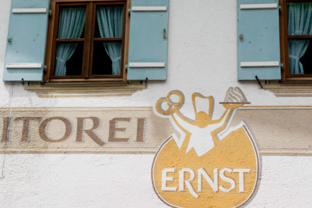
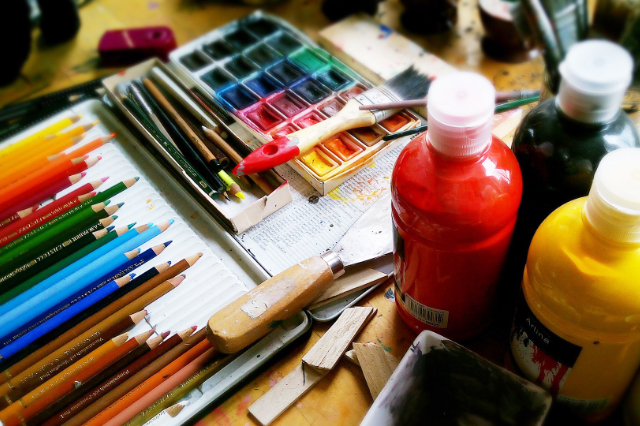

行ったことのない街を歩いたり、知らなかった技術を学んだり、食べたことのないもの見つけたり。好奇心いっぱいの探索を。
Latest
Popular
カフェめぐり3年間、まじめなコーヒーと素朴なスイーツに行き着いた
ほどよい苦味が心地よいコーヒーと、卵の味が濃いドーナッツ。素朴で実直な味で繰り返し立ち寄りたくなるこのお店は、カフェ巡りが趣味だった店主の哲学から生まれました。
東京／Japan

ドイツの大定番プレッツェル、作ってわかった独特の形の秘密
日本では見たことしかなかったプレッツェルでしたが、本場ドイツで食べてすっかりファンに。地元のベーカリーでプレッツェル作りを体験して、地元おすすめの食べ方を教えてもらいました。
バイエルン／Germany

あの名作が生まれた絵本作家のアトリエを訪ねて
子どもの頃から大好きだった絵本「ぞうとくじら」の作者海川やまさん訪ねました。海の見える小高い丘の上にあるアトリエで生まれたたくさんの絵本に共通する視点とは……。
尾道／Japan